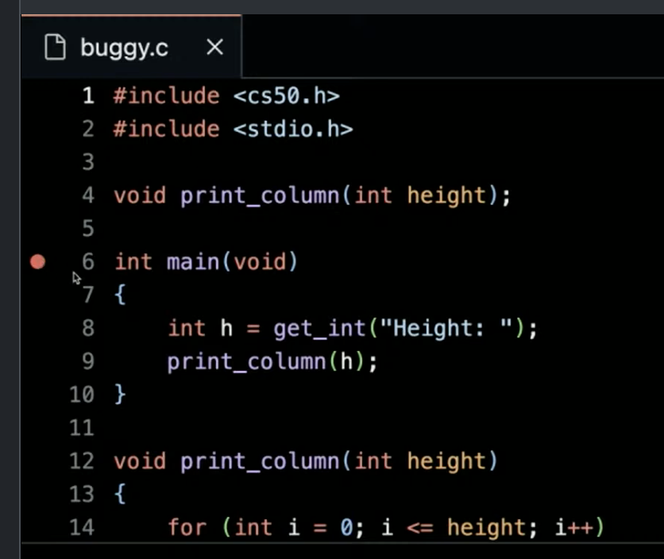
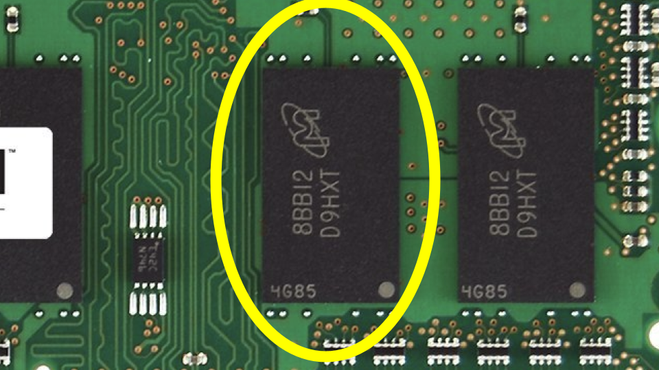
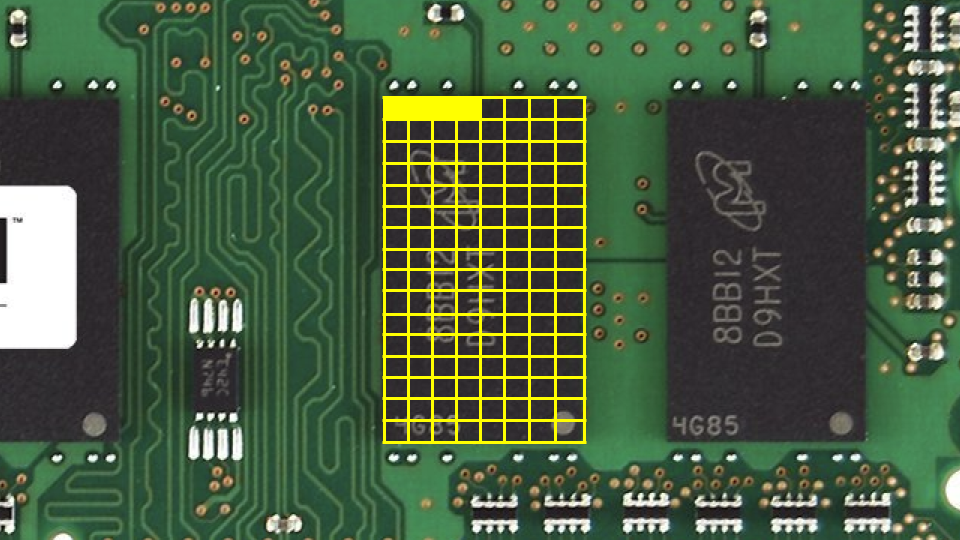
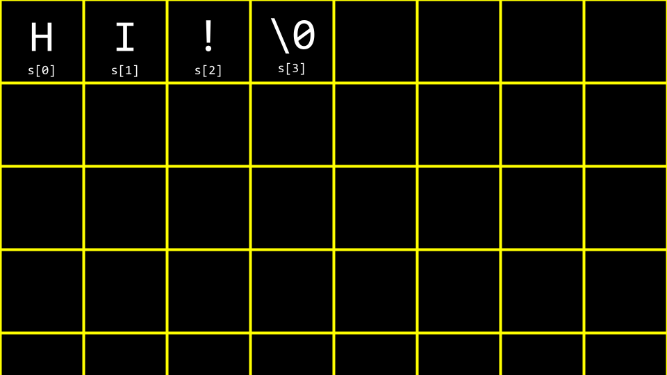
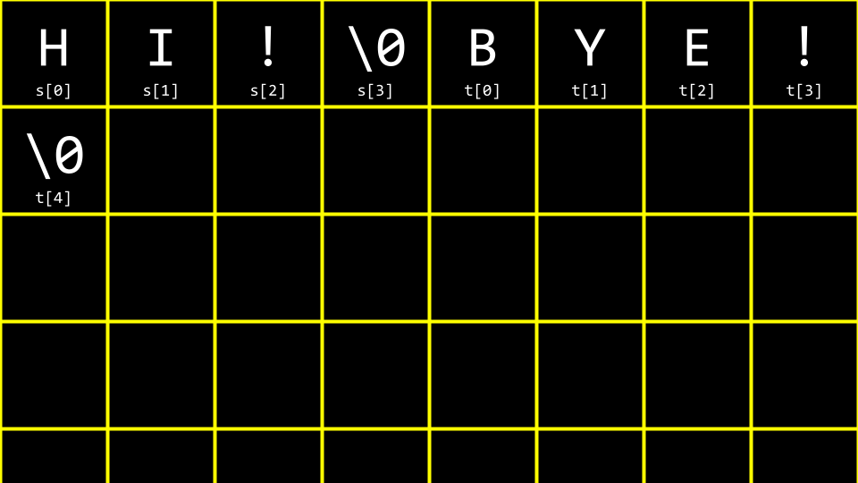

讲座 2
- 欢迎!
- Reading Levels
- Debugging
- Compiling
- Arrays
- Strings
- String Length
- Command-Line Arguments
- Exit Status
- Summing Up
欢迎!
- In our 上一页 session, we learned 关于 C, a text-based 编程 language.
- This 周, we are going to take a deeper look at additional building blocks that will support our goals of learning 更多 关于 编程 from the bottom up.
- Fundamentally, in addition to the essentials of 编程, this 课程 is 关于 problem-solving. Accordingly, we will also focus further on how to approach 计算机科学 problems.
- By the end of the 课程, you will learn how to use these aforementioned building blocks to solve a whole host of 计算机科学 problems.
- We take for granted many of these solutions provided by 计算机科学.
Reading Levels
- One of the real-世界 problems we will solve in this 课程 is understanding reading levels.
- With the help of some of your peers, we presented readings at various reading levels.
- We will be quantifying reading levels this 周 as one of your many 编程 challenges.
Debugging
- Everyone will make mistakes while coding.
- Debugging is the process of locating and removing bugs from your code.
- One of the debugging techniques you will use during this 课程 to 调试 your code is called rubber duck debugging, where you can talk to an inanimate object (or yourself) to help think through your code and why it is not working as intended. When you are having challenges with your code, consider how speaking out loud to, quite literally, a rubber duck 关于 the code problem. If you’d rather not talk to a small plastic duck, you are 欢迎 to speak to a human near you!
- We have created the CS50 Duck and CS50.ai as 工具 that can help you 调试 your code.
-
Consider the following code:
// Missing #include for stdio.h int main(void) { printf("hello, world\n"); }Notice how the
#includedirective forstdio.his missing. This header file is 必需 for theprintffunction to work properly. Without it, the compiler will not recognize theprintffunction and will generate an error. -
Similarly, consider the following code:
// Misspelled stdio.h #include <studio.h> int main(void) { printf("hello, world\n"); }Notice how
stdio.his misspelled asstudio.h. This typo will cause a compilation error because the compiler cannot find a file calledstudio.h. The correct header file 姓名 isstdio.h, which stands for “standard input/output.” -
We might forget to declare the type of a variable:
// Missing cs50.h, variable's type, semicolon, %s, and second printf argument. #include <stdio.h> int main(void) { name = get_string("What's your name? ") printf("hello, world\n"); }Notice there are multiple errors. First, the type of
nameis not declared. Second, thecs50.hlibrary is missing to allow us to usestring. Third, there’s a missing semicolon after theget_stringcall. Fourth, theprintfstatement doesn’t actually use thenamevariable. - Some bugs will prompt an error message. Others are logical errors that will not prompt a message, but will result in unexpected behavior in your program.
- The
printfstatement can be used to 调试 your code. Consider the following: -
Consider the following image from last 周:

-
Consider the following code that has a bug purposely inserted within it:
// Buggy example for printf #include <stdio.h> int main(void) { for (int i = 0; i <= 3; i++) { printf("#\n"); } }Notice that this code prints four blocks instead of three.
- Type
code buggy.cinto the terminal window and write the above code. - Running this code, four bricks appear instead of the intended three.
-
printfis a very useful way of debugging your code. You could modify your code as follows:// Buggy example for printf #include <stdio.h> int main(void) { for (int i = 0; i <= 3; i++) { printf("i is %i\n", i); printf("#\n"); } }Notice how this code outputs the value of
iduring each iteration of the loop such that we can 调试 our code. -
Running this code, you will see numerous statements, including
i is 0,i is 1,i is 2, andi is 3. Seeing this, you might realize that further code needs to be corrected as follows:#include <stdio.h> int main(void) { for (int i = 0; i < 3; i++) { printf("#\n"); } }Notice the
<=has been replaced with<. -
This code can be further improved as follows:
// Buggy example for debug50 #include <cs50.h> #include <stdio.h> void print_column(int height); int main(void) { int h = get_int("Height: "); print_column(h); } void print_column(int height) { for (int i = 0; i <= height; i++) { printf("#\n"); } }Notice that compiling and running this code still results in a bug.
- To address this bug, we will use a new 工具.
- A second 工具 in debugging is called a debugger, a software 工具 created by programmers to help track down bugs in code.
- In VS Code, a pre-configured debugger has been provided to you called
debug50. -
To utilize this debugger, first set a breakpoint by clicking to the left of a line of your code, just to the left of the line number. When you click there, you will see a red dot appearing. Imagine this as a stop sign, asking the debugger to pause so that you can consider what’s happening in this part of your code.

- Second, run
debug50 ./buggy. You will notice that after the debugger comes to life and a line of your code will illuminate in a gold-like color. Quite literally, the code has paused at this line of code. Notice in the top left corner how all local variables are being displayed, includingh, which currently does not have a value. At the top of your window, you can click thestep overbutton, and it will keep moving through your code. Notice how the value ofiincreases as you step through the loop. - While this 工具 will not show you where your bug is, it will help you slow down and see how your code is running step by step. You can use
step intoas a way to look further into the details of your buggy code. - A third way of debugging is by speaking to a rubber duck, inanimate object, or a person to describe the problem you are facing and the specific steps you are taking to solve that problem as a means by which to discover your error.
- Finally,
, also known as the *CS50 Duck*, can help you with debugging your code.
Compiling
- Recall that last 周, you learned 关于 a compiler, a specialized computer program that converts 源代码 into machine code that can be understood by a computer.
-
We convert 源代码 into machine code using a very special piece of software called a compiler. Today, we will be introducing you to a compiler that will allow you to convert 源代码 in the 编程 language C into machine code.
flowchart LR in["source code"] --> BOX[" compiler "] BOX --> out["machine code"] -
For 示例, you might have a computer program that looks like this:
#include <stdio.h> int main(void) { printf("hello, world\n"); } -
A compiler will take the above code and turn it into the machine code that might look something like this:
01010100 01001000 01001001 01010011 00100000 01001001 01010011 00100000 01000011 01010011 00110101 00110000笔记 that the above is only illustrative. The machine code for the problem above would be much longer.
-
VS Code, the 编程 environment provided to you as a CS50 student, utilizes a compiler called
clang(which stands for “C Language Family Frontend”). - You can enter the following into the terminal window to compile your code:
clang -o hello hello.c. -
Command-line arguments are provided at the 命令行 to
clangas-o hello hello.c. - Running
./helloin the terminal window, your program runs as intended. -
Consider the following code from last 周:
#include <cs50.h> #include <stdio.h> int main(void) { string name = get_string("What's your name? "); printf("hello, %s\n", name); } - To compile this code, you can type
clang -o hello hello.c -lcs50. - If you were to type
make hello, it runs a command that executes clang to create an output file that you can run as a user. - VS Code has been pre-programmed such that
makewill run numerous 命令行 arguments along with clang for your convenience as a user. - While the above is offered as an illustration, such that you can understand 更多 deeply the process and concept of compiling code, using
makein CS50 is perfectly fine and the expectation! - Compiling involves four major steps, including the following:
-
First, preprocessing is where the header files in your code, designated by a
#(such as#include <cs50.h>) are effectively copied and pasted into your file. During this step, the code fromcs50.his copied into your program. Similarly, just as your code contains#include <stdio.h>, code contained withinstdio.hsomewhere on your computer is copied to your program. This step can be visualized as follows:string get_string(string prompt); int printf(string format, ...); int main(void) { string name = get_string("What's your name? "); printf("hello, %s\n", name); } -
Second, compiling is where your program is converted into assembly code. This step can be visualized as follows:
... main: .cfi_startproc # BB#0: pushq %rbp .Ltmp0: .cfi_def_cfa_offset 16 .Ltmp1: .cfi_offset %rbp, -16 movq %rsp, %rbp .Ltmp2: .cfi_def_cfa_register %rbp subq $16, %rsp xorl %eax, %eax movl %eax, %edi movabsq $.L.str, %rsi movb $0, %al callq get_string movabsq $.L.str.1, %rdi movq %rax, -8(%rbp) movq -8(%rbp), %rsi movb $0, %al callq printf ... -
Third, assembling involves the assembler (a 工具 in the compiler toolchain) converting your assembly code into machine code. This step can be visualized as follows:
01111111010001010100110001000110 00000010000000010000000100000000 00000000000000000000000000000000 00000000000000000000000000000000 00000001000000000011111000000000 00000001000000000000000000000000 00000000000000000000000000000000 ... -
Finally, during the linking step, pre-compiled machine code from your included libraries is combined with your code. The final executable file is then outputted.
01111111010001010100110001000110 00000010000000010000000100000000 00000000000000000000000000000000 00000000000000000000000000000000 00000001000000000011111000000000 00000001000000000000000000000000 00000000000000000000000000000000 00000000000000000000000000000000 00000000000000000000000000000000 00000000000000000000000000000000 10100000000000100000000000000000 00000000000000000000000000000000 00000000000000000000000000000000 01000000000000000000000000000000 00000000000000000100000000000000 00001010000000000000000100000000 01010101010010001000100111100101 01001000100000111110110000010000 00110001110000001000100111000111 01001000101111100000000000000000 00000000000000000000000000000000 00000000000000001011000000000000 11101000000000000000000000000000 00000000010010001011111100000000 00000000000000000000000000000000 00000000000000000000000001001000 ...
Arrays
- In 第 0 周, we talked 关于 data types such as
bool,int,char,string, etc. - Each data type requires a certain amount of system 资源 (these are typical sizes in the CS50 environment):
-
bool1 byte -
int4 bytes -
long8 bytes -
float4 bytes -
double8 bytes -
char1 byte -
string? bytes
-
-
Inside of your computer, you have a finite amount of 内存 available.

-
Physically, on the 内存 of your computer, you can imagine how specific types of data are stored on your computer. You might imagine that a
char, which only requires 1 byte of 内存, 五月 look as follows:
-
Similarly, an
int, which requires 4 bytes, might look as follows:
-
We can create a program that explores these concepts. Inside your terminal, type
code scores.cand write code as follows:// Averages three (hardcoded) numbers #include <stdio.h> int main(void) { // Scores int score1 = 72; int score2 = 73; int score3 = 33; // Print average printf("Average: %f\n", (score1 + score2 + score3) / 3.0); }Notice that the number on the right is a floating point value of
3.0, so that the calculation is rendered as a floating point value in the end. - Running
make scorescompiles the program. Then running./scoresexecutes it. -
You can imagine how these variables are stored in 内存:

- Arrays are a sequence of values that are stored 返回-to-返回 in 内存.
-
int scores[3]is a way of telling the compiler to provide you three 返回-to-返回 places in 内存 of sizeintto store threescores. Considering our program, you can revise your code as follows:// Averages three (hardcoded) numbers using an array #include <cs50.h> #include <stdio.h> int main(void) { // Scores int scores[3]; scores[0] = 72; scores[1] = 73; scores[2] = 33; // Print average printf("Average: %f\n", (scores[0] + scores[1] + scores[2]) / 3.0); }Notice that
scores[0]examines the value at this 地点 of 内存 byindexing intothe array calledscoresat 地点0to see what value is stored there. -
You can see how, while the above code works, there is still an opportunity for improving our code. Revise your code as follows:
// Averages three numbers using an array and a loop #include <cs50.h> #include <stdio.h> int main(void) { // Get scores int scores[3]; for (int i = 0; i < 3; i++) { scores[i] = get_int("Score: "); } // Print average printf("Average: %f\n", (scores[0] + scores[1] + scores[2]) / 3.0); }Notice how we index into
scoresby usingscores[i]whereiis supplied by theforloop. -
We can simplify or abstract away the calculation of the average. Modify your code as follows:
// Averages three numbers using an array, a constant, and a helper function #include <cs50.h> #include <stdio.h> // Constant const int N = 3; // Prototype float average(int length, int array[]); int main(void) { // Get scores int scores[N]; for (int i = 0; i < N; i++) { scores[i] = get_int("Score: "); } // Print average printf("Average: %f\n", average(N, scores)); } float average(int length, int array[]) { // Calculate average int sum = 0; for (int i = 0; i < length; i++) { sum += array[i]; } return sum / (float) length; }Notice that a new function called
averageis declared. Further, notice that aconstor constant value ofNis declared. Most importantly, notice how theaveragefunction takesint array[], which means that the function can receive an array as a parameter. - Not only can arrays be containers: They can be passed between functions.
Strings
- A
stringis simply an array of values of typechar: an array of characters. -
To explore
charandstring, typecode hi.cin the terminal window and write code as follows:// Prints chars #include <stdio.h> int main(void) { char c1 = 'H'; char c2 = 'I'; char c3 = '!'; printf("%c%c%c\n", c1, c2, c3); }Notice that this will output a string of characters.
-
Similarly, make the following modification to your code:
// Prints chars' ASCII codes #include <stdio.h> int main(void) { char c1 = 'H'; char c2 = 'I'; char c3 = '!'; printf("%i %i %i\n", c1, c2, c3); }Notice that ASCII codes are printed by replacing
%cwith%i. -
Considering the following image, you can see how a string is an array of characters that begins with the first character and ends with a special character called a
NUL character(笔记: NUL with one L is the ‘\0’ character, different from NULL with two L’s):
-
Imagining this in decimal, your array would look like the following:

-
We can imagine the above as follows:
// Prints string #include <cs50.h> #include <stdio.h> int main(void) { string s = "HI!"; printf("%s\n", s); }Notice that all characters are represented within a
string. -
To further understand how a
stringworks, revise your code as follows:// Treats string as array #include <cs50.h> #include <stdio.h> int main(void) { string s = "HI!"; printf("%c%c%c\n", s[0], s[1], s[2]); }Notice how the
printfstatement presents three values from our array calleds. -
As before, we can replace
%cwith%ias follows:// Prints string's ASCII codes, including NUL #include <cs50.h> #include <stdio.h> int main(void) { string s = "HI!"; printf("%i %i %i %i\n", s[0], s[1], s[2], s[3]); }Notice that this prints the string’s ASCII codes, including NUL.
-
Let’s imagine we want to say both
HI!andBYE!. Modify your code as follows:// Multiple strings #include <cs50.h> #include <stdio.h> int main(void) { string s = "HI!"; string t = "BYE!"; printf("%s\n", s); printf("%s\n", t); }Notice that two strings are declared and used in this 示例.
-
You can visualize this as follows:

-
We can further improve this code. Modify your code as follows:
// Array of strings #include <cs50.h> #include <stdio.h> int main(void) { string words[2]; words[0] = "HI!"; words[1] = "BYE!"; printf("%s\n", words[0]); printf("%s\n", words[1]); }Notice that both strings are stored within a single array of type
string. -
We can consolidate our two strings into an array of strings.
#include <cs50.h> #include <stdio.h> int main(void) { string words[2]; words[0] = "HI!"; words[1] = "BYE!"; printf("%c%c%c\n", words[0][0], words[0][1], words[0][2]); printf("%c%c%c%c\n", words[1][0], words[1][1], words[1][2], words[1][3]); }Notice that an array of
wordsis created. It is an array of strings. Each word is stored inwords.
String Length
-
A common problem within 编程, and perhaps C 更多 specifically, is to discover the length of a string. How could we implement this in code? Type
code length.cin the terminal window and code as follows:// Determines the length of a string #include <cs50.h> #include <stdio.h> int main(void) { // Prompt for user's name string name = get_string("Name: "); // Count number of characters up until '\0' (aka NUL) int n = 0; while (name[n] != '\0') { n++; } printf("%i\n", n); }Notice that this code loops until the NUL character is found.
-
This code can be improved by abstracting away the counting into a function as follows:
// Determines the length of a string using a function #include <cs50.h> #include <stdio.h> int string_length(string s); int main(void) { // Prompt for user's name string name = get_string("Name: "); int length = string_length(name); printf("%i\n", length); } int string_length(string s) { // Count number of characters up until '\0' (aka NUL) int n = 0; while (s[n] != '\0') { n++; } return n; }Notice that a new function called
string_lengthcounts characters until NUL is located. -
Since this is such a common problem within 编程, other programmers have created code in the
string.hlibrary to find the length of a string. You can find the length of a string by modifying your code as follows:// Determines the length of a string using a function #include <cs50.h> #include <stdio.h> #include <string.h> int main(void) { // Prompt for user's name string name = get_string("Name: "); int length = strlen(name); printf("%i\n", length); }Notice that this code uses the
string.hlibrary, declared at the top of the file. Further, it uses a function from that library calledstrlen, which calculates the length of the string passed to it. - Our code can stand on the shoulders of programmers who came before and use libraries they created.
-
ctype.his another library that is quite useful. Imagine we wanted to create a program that converted all lowercase characters to uppercase ones. In the terminal window, typecode uppercase.cand write code as follows:// Uppercases a string #include <cs50.h> #include <stdio.h> #include <string.h> int main(void) { string s = get_string("Before: "); printf("After: "); for (int i = 0, n = strlen(s); i < n; i++) { if (s[i] >= 'a' && s[i] <= 'z') { printf("%c", s[i] - 32); } else { printf("%c", s[i]); } } printf("\n"); }Notice that this code iterates through each value in the string. The program looks at each character. If the character is lowercase, it subtracts 32 from the character’s ASCII value to convert it to uppercase.
-
Recalling our 上一页 work from last 周, you might remember this ASCII values chart:
0 NUL 16 DLE 32 SP 48 0 64 @ 80 P 96 ` 112 p 1 SOH 17 DC1 33 ! 49 1 65 A 81 Q 97 a 113 q 2 STX 18 DC2 34 ” 50 2 66 B 82 R 98 b 114 r 3 ETX 19 DC3 35 # 51 3 67 C 83 S 99 c 115 s 4 EOT 20 DC4 36 $ 52 4 68 D 84 T 100 d 116 t 5 ENQ 21 NAK 37 % 53 5 69 E 85 U 101 e 117 u 6 ACK 22 SYN 38 & 54 6 70 F 86 V 102 f 118 v 7 BEL 23 ETB 39 ’ 55 7 71 G 87 W 103 g 119 w 8 BS 24 CAN 40 ( 56 8 72 H 88 X 104 h 120 x 9 HT 25 EM 41 ) 57 9 73 I 89 Y 105 i 121 y 10 LF 26 SUB 42 * 58 : 74 J 90 Z 106 j 122 z 11 VT 27 ESC 43 + 59 ; 75 K 91 [ 107 k 123 { 12 FF 28 FS 44 , 60 < 76 L 92 \ 108 l 124 | 13 CR 29 GS 45 - 61 = 77 M 93 ] 109 m 125 } 14 SO 30 RS 46 . 62 > 78 N 94 ^ 110 n 126 ~ 15 SI 31 US 47 / 63 ? 79 O 95 _ 111 o 127 DEL - When an ASCII lowercase letter (a-z) has
32subtracted from it, it results in the uppercase version of that same letter. 笔记 this only works for ASCII letters a-z, not for accented or non-ASCII characters. -
While the program does what we want, there is an easier way using the
ctype.hlibrary. Modify your program as follows:// Uppercases string using ctype library (and an unnecessary condition) #include <cs50.h> #include <ctype.h> #include <stdio.h> #include <string.h> int main(void) { string s = get_string("Before: "); printf("After: "); for (int i = 0, n = strlen(s); i < n; i++) { if (islower(s[i])) { printf("%c", toupper(s[i])); } else { printf("%c", s[i]); } } printf("\n"); }Notice that the program iterates through each character of the string. The
toupperfunction is passeds[i]. Each character (if lowercase) is converted to uppercase. -
It’s worth mentioning that
toupperautomatically knows to uppercase only lowercase characters. Hence, your code can be simplified as follows:// Uppercases string using ctype library #include <cs50.h> #include <ctype.h> #include <stdio.h> #include <string.h> int main(void) { string s = get_string("Before: "); printf("After: "); for (int i = 0, n = strlen(s); i < n; i++) { printf("%c", toupper(s[i])); } printf("\n"); }Notice that this code uppercases a string using the
ctypelibrary. - You can 阅读 关于 all the capabilities of the
ctypelibrary on the Manual Pages.
Command-Line Arguments
-
Command-line argumentsare those arguments that are passed to your program at the 命令行. For 示例, all those statements you typed afterclangare considered 命令行 arguments. You can use these arguments in your own programs! -
In your terminal window, type
code greet.cand write code as follows:// Uses get_string #include <cs50.h> #include <stdio.h> int main(void) { string answer = get_string("What's your name? "); printf("hello, %s\n", answer); }Notice that this says
helloto the user. -
Still, would it not be nice to be able to take arguments before the program even runs? Modify your code as follows:
// Prints a command-line argument #include <cs50.h> #include <stdio.h> int main(int argc, string argv[]) { if (argc == 2) { printf("hello, %s\n", argv[1]); } else { printf("hello, world\n"); } }Notice that this program knows both
argc, the number of 命令行 arguments, andargv, which is an array of strings passed as arguments at the 命令行. - Therefore, using the syntax of this program, executing
./greet Davidwould result in the program sayinghello, David. -
You can print each of the command-line arguments with the following:
// Prints command-line arguments #include <cs50.h> #include <stdio.h> int main(int argc, string argv[]) { for (int i = 0; i < argc; i++) { printf("%s\n", argv[i]); } }Notice how this code prints out each command-line argument on its own line. The first argument (argv[0]) is always the 姓名 of the program itself, followed by any arguments you provide when running the program.
Exit Status
- When a program ends, a special exit code is provided to the computer.
- When a program exits without error, a status code of
0is provided to the computer. Often, when an error occurs that results in the program ending, a status of1is provided to the computer. -
You could write a program as follows that illustrates this by typing
code status.cand writing code as follows:// Returns explicit value from main #include <cs50.h> #include <stdio.h> int main(int argc, string argv[]) { if (argc != 2) { printf("Missing command-line argument\n"); return 1; } printf("hello, %s\n", argv[1]); return 0; }Notice that if you fail to provide
./status David, you will get an exit status of1. However, if you do provide./status David, you will get an exit status of0. - You can type
echo $?in the terminal to see the exit status of the last run command. - You can imagine how you might use portions of the above program to check if a user provided the correct number of command-line arguments.
Summing Up
In this lesson, you learned 更多 details 关于 compiling and how data is stored within a computer. Specifically, you learned…
- Generally, how a compiler works.
- How to 调试 your code using four methods.
- How to utilize arrays within your code.
- How arrays store data in 返回-to-返回 portions of 内存.
- How strings are simply arrays of characters.
- How to interact with arrays in your code.
- How command-line arguments can be passed to your programs.
See you 下一页 时间!